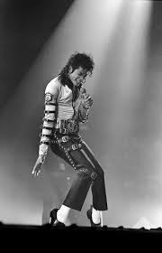

Sean Bankhead has established himself as a household name in the industry as the mastermind behind some of 2021's most iconic artist performances.

Michael Jackson
Michael Joseph Jackson was an American singer, dancer, and so much more. Also being known for choreographing his own dances for performing on stage and in music videos like his songs Bad, Smooth Criminal, and Thriller./p>
Les Twins
Laurent and Larry Nicolas Bourgeois aka the Les Twins are French dancers, choreographers, etc are recognized internationally for their talents in new style hip-hop dancing, and various dancing styles.
Dance is often a profound way for cultures to express their history, traditions, and values. Different dance forms can signify various emotions, narratives, and cultural identities. It serves as a powerful medium for emotional expression, allowing individuals to convey feelings such as joy, sorrow, celebration, or protest without words. This can be therapeutic and cathartic. Dance is a form of physical exercise that promotes flexibility, strength, coordination, and cardiovascular health. It can be a fun way to stay fit and active. Dancing often takes place in social settings, fostering connections between people and promoting social interaction. It can strengthen relationships and build communities. It is a form of artistic expression that encourages creativity, innovation, and experimentation. Dancers can explore different styles, movements, and techniques to create unique performances. Dance is a source of entertainment for both performers and audiences. It can captivate and inspire people through its beauty, grace, and storytelling. Many traditional dances are passed down through generations, helping to preserve cultural heritage and keep historical practices alive. Experiencing and appreciating dances from different cultures can promote empathy, understanding, and respect for diversity.